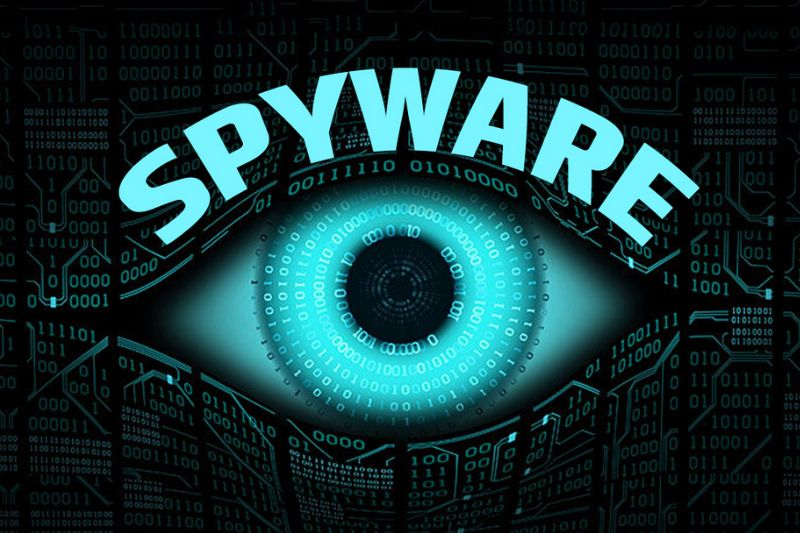

El spyware es parecido a una zona gris, ya que realmente no existe una definición de manual. Sin embargo, como su nombre sugiere, el spyware se define vagamente como un software diseñado para recopilar datos de un ordenador u otro dispositivo y reenviarlos a un tercero sin el conocimiento o consentimiento del usuario.

Esto a menudo incluye la recopilación de datos confidenciales (como contraseñas, números PIN y números de tarjetas de crédito), la supervisión de las pulsaciones de teclas, el rastreo de los hábitos de navegación y la recopilación de direcciones de correo electrónico.
El spyware puede causar dos problemas principales. En primer lugar, y quizás lo más importante, puede robar información personal que se puede utilizar para el robo de identidades. Si el software malintencionado tiene acceso a cada fragmento de información de tu ordenador, incluidos el historial de navegación, las cuentas de correo electrónico, las contraseñas guardadas utilizadas para operaciones bancarias y compras online, además de para las redes sociales, se puede recopilar información más que necesaria para crear un perfil que imite tu identidad. Además, si has visitado sitios de banca online, el spyware puede sustraer la información de tu cuenta bancaria o de tus tarjetas de crédito y venderla a terceros o usarla directamente.
El segundo problema, y el más común, es que el daño que el spyware puede hacer a tu ordenador. El spyware puede consumir una gran cantidad de recursos del ordenador, lo que provoca que se ejecute lentamente, retrasos entre aplicaciones o mientras está online, fallos o bloqueos frecuentes del sistema e incluso una sobrecarga del ordenador que causa daños permanentes. También puede manipular los resultados del motor de búsqueda y entregar sitios web no deseados en su navegador, lo que puede llevar a sitios web potencialmente peligrosos o fraudulentos. También puede hacer que tu página de inicio cambie e incluso puede modificar la configuración del ordenador.
La mejor manera de controlar el spyware es evitando que se introduzca en el ordenador en el primer lugar, pero no descargar programas y no hacer clic en archivos adjuntos de correo electrónico no siempre es una opción. A veces, incluso un sitio web de confianza puede verse comprometido e infectar tu ordenador, o incluso si no has hecho nada malo.
Muchas personas están recurriendo a soluciones de seguridad en Internet con capacidades de detección antivirus fiables y protección proactiva. Si el equipo ya está infectado, muchos proveedores de seguridad ofrecen utilidades de eliminación de spyware para ayudar en la identificación y eliminación del spyware. Hay una serie de soluciones antivirus gratuitas disponibles.
Sin embargo, aunque una prueba gratuita de antivirus es una excelente manera de averiguar qué producto es mejor para ti, no confíes en una solución que promete protección ilimitada sin coste alguno. A menudo carecerán de ciertas funciones, como un teclado cifrado virtual para acceder a la información financiera o una potente solución antispam y un sistema de detección basado en la nube, que deja a tu ordenador en peligro. Asegúrate de utilizar un proveedor de seguridad en internet fiable a la hora de elegir una herramienta de eliminación de spyware, ya que algunas utilidades pueden ser fraudulentas y pueden ser en realidad spyware.